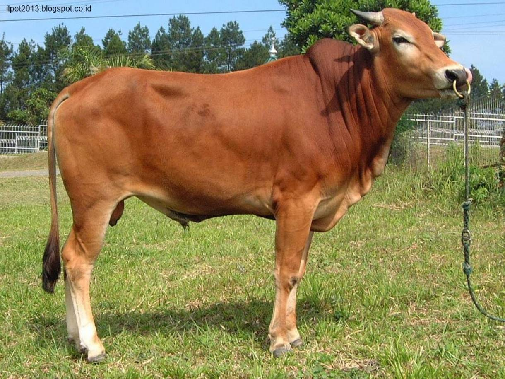

Sapi
Sapi merupakan salah satu bahan makanan yang digemari oleh masyarakat Indonesia, mulai dari bayi hingga orang tua sekalipun mayoritas menyukainya. Sapi dapat di olah menjadi berbagai jenis makanan, mulai dari makanan pinggir jalan / streetfood yang harganya terjangkau hingga di kelas restoran mewah sekalipun. Di dunia sapi memiliki banyak jenis mulai dari Sapi Lokal, Wagyu, Sapi Kobe, Sapi Australia dan Sapi Amerika, tiap jenis memiliki karakteristik yang berbeda beda.